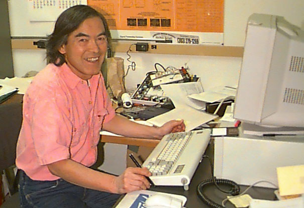

Eiichi Fukushima
Ph.D. in Physics, University of Washington, 18 years at Los Alamos National Laboratory, and joined Lovelace in 1985, before helping start NMR in 1997. Expertise is in NMR methods and instrumentation and shares two patents. He is on the editorial board of J. Magn. Reson., reviews for Powder Technology, Medical Phys., Physics of Fluids, Magnetic Resonance Imaging, and Magn. Reson. Med., as well as for NSF, DOE, NIH, Canadian agencies, and private foundations. He is also Adjunct Professor of Physics at UNM.
